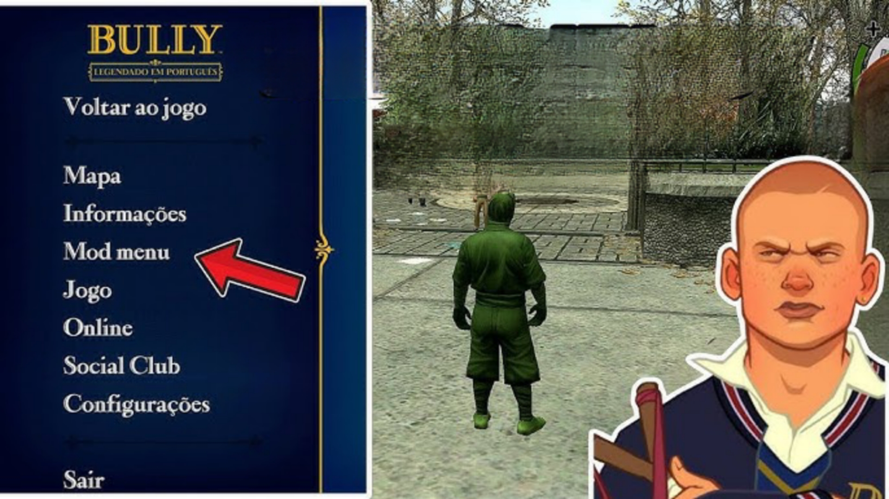

Explore o universo de Bully com melhorias, traduções, bônus e muito mais!
Bully é um jogo de ação e aventura em mundo aberto desenvolvido pela Rockstar Games. Lançado originalmente para PlayStation 2 e posteriormente adaptado para outras plataformas, incluindo Android, o jogo nos coloca no papel de Jimmy Hopkins, um jovem rebelde enviado para a Bullworth Academy. Nessa escola cheia de problemas, o jogador precisa lidar com valentões, professores rígidos, e diversas panelinhas enquanto tenta se impor nesse novo ambiente.
O destaque do jogo está em sua ambientação única, que mistura a liberdade típica dos jogos da Rockstar com uma narrativa centrada no cotidiano escolar. É possível frequentar aulas, fazer amizades (ou inimizades), participar de minigames e se envolver em uma série de missões cômicas e cheias de atitude.
O Mod Menu é uma modificação especial adicionada ao Bully que permite ao jogador experimentar o jogo de uma maneira completamente nova. Mais do que uma simples alteração, ele reestrutura a forma como o jogador interage com o mundo do jogo, tornando a experiência mais livre, criativa e até surpreendente.
Com ele, é possível vivenciar o Bully de formas que o jogo original nunca permitiu, sem perder o charme e a identidade da obra. É um recurso que transforma o gameplay em algo único, elevando o nível de personalização e interação com o jogo.
Os Mods Complementares são verdadeiros bônus que enriquecem ainda mais a experiência de jogar Bully. São alterações criativas e ousadas que adicionam novos visuais, ajustes no ambiente, melhorias estéticas e até elementos inéditos no jogo.
Esses mods não seguem um padrão fixo — cada um traz algo especial. Alguns modificam a aparência dos personagens, outros adicionam roupas novas, e há também os que melhoram o clima e a iluminação da escola. Tudo isso é pensado para oferecer variedade e deixar o jogo ainda mais divertido e renovado para quem já conhece tudo de cor.